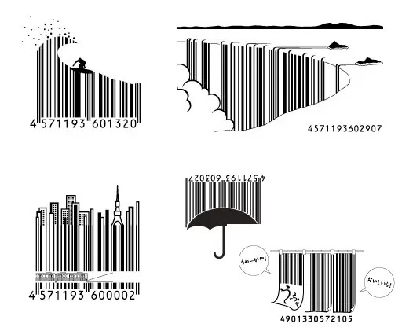

Erklärung und Entstehungshintergrund:
Strichcodes sind eine Methode zur Darstellung von Daten in einer visuellen, maschinenlesbaren Form. Sie bestehen aus Mustern von Linien, Punkten, Rechtecken oder anderen Formen, die von speziellen Geräten, so genannten Barcode-Lesegeräten, gescannt werden können. Barcodes werden für verschiedene Zwecke verwendet, z. B. für die Bestandsverwaltung, Produktidentifizierung, Nachverfolgung und Datenerfassung. Der erste Strichcode, der wie ein Bullauge aussieht, wurde 1948 von zwei Studenten der Drexel University namens Norman J. Woodland und Bernard Silver erfunden. Sie wollten die Probleme der Supermarktbranche angehen, die dringend eine bessere Methode für die Bestandsverwaltung und die Kundenabrechnung benötigte. Die beiden erhielten 1952 ein Patent.Bekannte Arten von Strichcodes:
Über die Jahre sind Strichcodes immer bekannter geworden, einige der bekanntesten Strichcodes sind:- EAN (European Article Number)
- UPC (Universal Product Code)
- IAN (International Article Numbering)
- JAN (Japanese Article Numbering)
- Zielcode
- 2/5-Familie
- Code 39
- Code 93
- Codabar
- Code128
Normierung:
Die Qualität und Druckqualität der Strichcodes ist mit der Norm ISO/IEC 15416 definiert. Die Datenstrukturen wie zum Beispiel GS1-128 oder Fact sind mit ISO/IEC 15418 festgelegt.Datenstrukturen:
Im einfachsten Fall ist eine Datenstruktur nur die Kenntnis der Bedeutung einer Zeichenfolge, die in einem Strichcode kodiert ist. In großen firmenübergreifenden logistischen Systemen sind Datenstrukturen von entscheidender Bedeutung. Es ist ratsam, die einzusetzenden Datenstrukturen vor der Einführung einer Strichcodeanwendung zu berücksichtigen. Die ISO/IEC 15418 normiert allgemein verfügbare Datenstrukturen. Das Normenwerk ISO/IEC 15459 (Teil 1 bis Teil 8) definiert die Verfahren für weltweit eindeutige Artikelnummern, Seriennummern usw. Die Vorgehensweise, die in der ISO/IEC 15459-2 festgelegt ist, ist Voraussetzung für eine weltweite eindeutige Nummernvergabe. Organisationen, die sich auf diese Weise registrieren lassen, haben die Möglichkeit eindeutige Nummernsysteme zu schaffen, die untereinander unverwechselbar sind. Beispiele dafür sind ODETTE, Dun & Bradstreet, EDIFICE, IBM, UPU und NATO. Auch GS1 ist auf diese Liste aufgenommen, aber es sollte besonders berücksichtigt werden, da es häufig die falsche Annahme hat, dass es die einzige Organisation ist, die eindeutige Nummernsysteme weltweit erzeugen kann.Strichcodelesegerät:
Ein Strichcodelesegerät kann meist nur bestimmte Strichcodes lesen für welches es programmiert wurde, meistens können Strichcodelesegeräte die Bekannten Arten von Strichcodes automatisch lesen. Sie gehören zu den Datenerfassungsgeräten, hierbei gibt es verschiedene Arten von Strichcodelesegeräten:- Lesestift: Ein Lesestift wird von einer Seite zu andern über den Strichcode geführt. Ein Dekodierer empfängt das Hell/Dunkel-Signal und entziffert so den Strichcode.
- CCD-Scanner: Der Strichcode wird mit LEDs beleuchtet. Der Strichcode reflektiert je nach Helligkeit oder Dunkelheit auf eine CCD- oder Photodiodenzeile.
- Laser-Scanner: Ein oder mehrere Laserstrahlen werden auf den Strichcode gerichtet und werden abhängig von der Farbe verschieden reflektiert und dekodiert.
Strichcodeprüfgerät:
Ein Strichcodeprüfer ist ein spezielles Messgerät, das die Druckqualität kontrolliert, einschließlich Kontrast, Metrik, systematischer Eigenschaften und gelegentlich Datenstrukturen. Diese Messgeräte unterliegen den üblichen Messtoleranzen. Die ISO/IEC 15426-1 (linear) und die ISO/IEC 15426-2 (2D) regeln die Messgenauigkeit dieser Messsysteme. Die Druckqualitätsanforderungen der Strichcodes und Matrixcodes werden häufig mit dieser Anforderungen an die Messgenauigkeit des Gerätes verwechselt. Die ISO/IEC 15416 und ISO/IEC 15415 regeln die Qualität des Codedrucks für Strichcodes und Maxtrixcodes.Im Gegensatz zum Lesegerät muss das Prüfgerät für eine Qualitätskontrolle unter definierten Bedingungen arbeiten, was bedeutet, dass gleichbleibende Winkel, Abstand und Unterlage erforderlich sind. Als Prüfmittel können Lesestifte, Laserscanner, CCD- oder Kamerascanner verwendet werden. Daher ist die "Grading"-Fähigkeit von Scannern, die in der Praxis häufig entdeckt wird, eine falsche Messung, die nur mit sich selbst vergleichbar ist. Es ist erforderlich, dass eine tatsächliche Messung mit einem kalibrierten Messgerät durchgeführt wird, dessen Messergebnisse auf nationale Standards rückführbar sind. Dieses Gerät kann bei der Physikalisch-Technischen Bundesanstalt in Braunschweig erworben werden. Die Unterscheidung zwischen echten Messgeräten und Pseudomessungen ist für Benutzer häufig schwierig. Sogar einige Fachleute in der Branche sind sich der Unterscheidung nicht bewusst und verkaufen Scanner mit Pseudomessfähigkeiten als kalibrierte optische Messgeräte.
Designbarcodes:
Es besteht die Möglichkeit eigen Strichcodes mit einem Design zu erstellen und unter anderem für das Marketing zu verwenden. Dies ist jedoch meist kostspielig und benötigt mehr Zeit als ein normierter Strichcode.
https://www.designmadeingermany.de/weblog/design-agentur-barcodes/